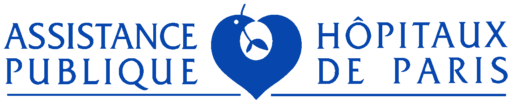

Équipe & référencesTeam & references
Une équipe du service public et de la tech, de confiance.A public-service and tech team you can trust.
Paul Duan
Fondateur & Président · Forbes, Ashoka, MIT Tech ReviewFounder & President · Forbes, Ashoka, MIT Tech Review
Elodie Juan-Julia
COO · ex-CFO Dogami, Head of Finance DatadogCOO · ex-CFO Dogami, Head of Finance Datadog
Jérémie Doucy, PhD
CTO · doctorat TAL, 15 ans d'ingénierie IA (Airbus)CTO · NLP PhD, 15 yrs AI engineering (Airbus)
Vincent Vercamer, PhD
Directeur Santé · ex-Délégation au Numérique en SantéHealth Director · ex-France Digital Health Delegation
Ils nous font confiance · partenaires & financeursTrusted by · partners & funders




DINUM
Ashoka
Actiris · Bruxelles
UK DWP
Caisse des Dépôts
Robert Wood Johnson Fdn
Fast Forward
Cas d'usage · SantéUse case · Healthcare
Des dizaines de cas d'usage, au service des soignants et des patients.Dozens of use cases, serving caregivers and patients.
Dans les hôpitaux publics, les besoins remontent du terrain. Notre programme d'accompagnement Impulse les transforme en agents, déployés sur la Bayes Platform.In public hospitals, needs come from the ground up. Our Impulse program turns them into agents, deployed on the Bayes Platform.
Interprétation cliniqueClinical insights
Lire & expliquer les résultatsRead & explain results
Génétique, immunologie, nutrition : aider le clinicien à interpréter analyses et examens.Genetics, immunology, nutrition: help clinicians interpret tests and results.
Appui aux protocolesProtocol support
Le bon protocole, étape par étapeThe right protocol, step by step
Urgences, réanimation néonatale : identifier le protocole et en suivre chaque étape.Emergency, neonatal ICU: find the protocol and follow each step.
Appui à la rechercheResearch support
Revues & éligibilité aux essaisReviews & trial eligibility
Évaluer la pertinence d'articles, analyser les dossiers pour les critères d'inclusion.Screen articles, analyse records against inclusion criteria.
Éducation & suivi patientPatient education
Informer & rassurer les patientsInform & reassure patients
Anesthésie pédiatrique, chirurgie, PMA, prévention : répondre aux questions fréquentes.Paediatric anaesthesia, surgery, ART, prevention: answer common questions.
Pré-consultationPre-consultation
Qualifier avant le rendez-vousQualify before the visit
Oncologie, cardiologie, orthopédie, gériatrie : recueillir et structurer les données.Oncology, cardiology, orthopaedics, geriatrics: collect and structure data.
Qualité & sécuritéQuality & safety
Signaler & analyserReport & analyse
Déclaration d'événements indésirables, lecture des indicateurs qualité.Adverse-event reporting, reading quality & safety indicators.

 CHU de Montpellier
Programme Impulse Healthcare · cohorte #1 (FR-26)Impulse Healthcare program · cohort #1 (FR-26)
CHU de Montpellier
Programme Impulse Healthcare · cohorte #1 (FR-26)Impulse Healthcare program · cohort #1 (FR-26)